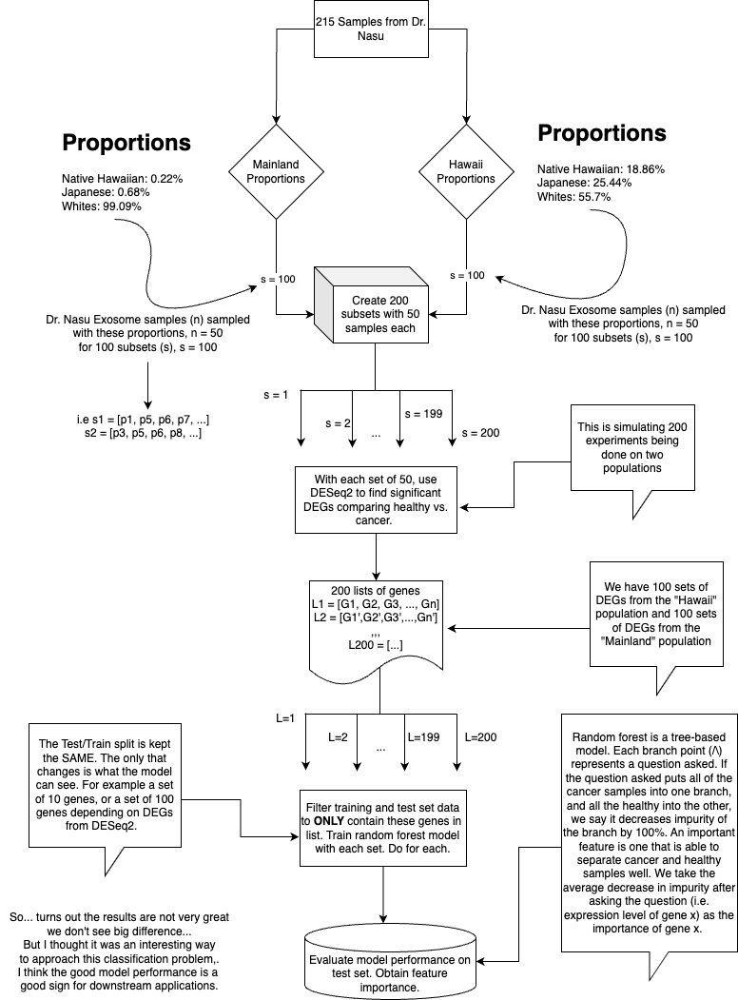
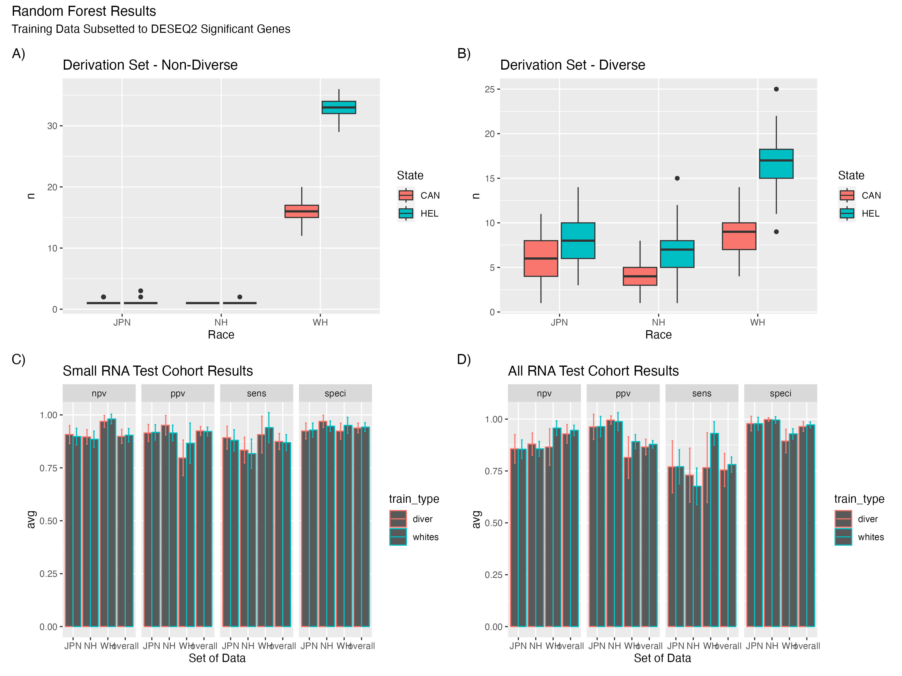
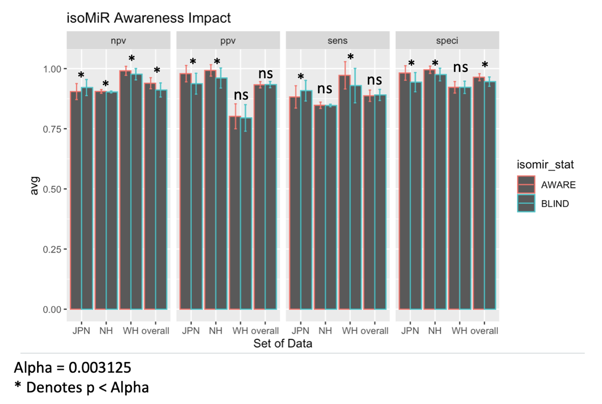
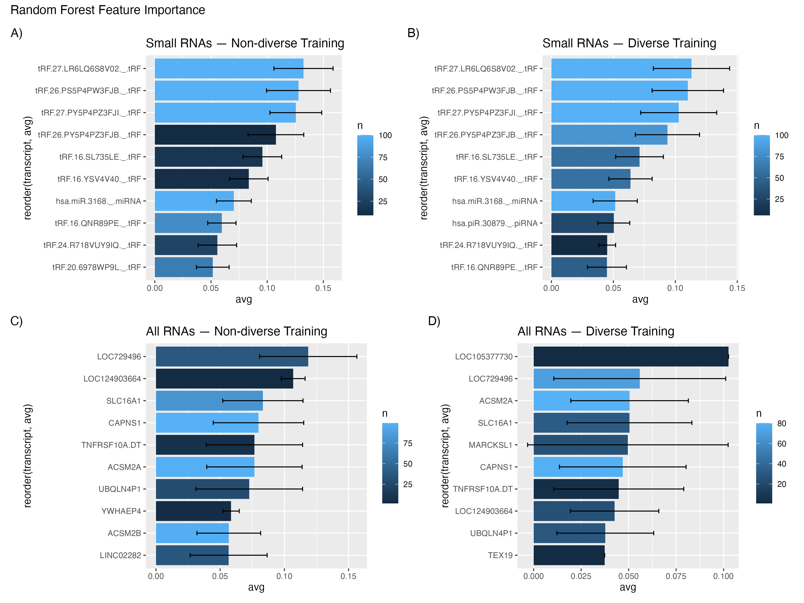

Diversity in Lung Cancer Diagnostic Models
Graphical Overview
Introduction & Importance
In the realm of small RNA liquid biopsy for cancer diagnostics, which is where the data was sourced from, ensuring equitable model performance across diverse populations is paramount. Unequal diagnostic accuracy can exacerbate existing health disparities, making it crucial to design models that provide consistent, reliable results for every individual, irrespective of their ethnic or racial background.
Here, I used two experiments with random forest models to explore (1) how the discovery of potential biomarkers is impacted by the experimental sampling design and (2) how the presence of microRNA isoforms [an addition variable that can be obtained from sequencing data], shown to be specific to race, can improve diagnostic models when these features are appended during the training process.
Code is not released as this is currently a project in progress.
Sampling in the Discovery Process
 To ensure realistic sampling, I leveraged data from the Quantitative Health Science at the John A. Burns School of Medicine shiny app and Wikipedia to understand ethnic distributions in both regions. This guided the proportions of Native Hawaiians, Japanese, and Whites in my distinct sample groups—the mainland US group and the Hawaii group. I applied a random forest model to detect differences between datasets, specifically looking at differential gene expression (DEGs) in the "whites" and "diverse" populations. The model exhibited robust performance (>0.8 across most metrics). Interestingly, there was no notable performance boost when DEGs from diverse populations were analyzed. I hypothesize that this could stem from the inherent challenge of just distinguishing between cancerous and healthy samples.
Incorporating Presence of MicroRNA Isoforms
We made our prediction tool smarter by adding isoMiR data, which is like giving it more clues to work with. For Native Hawaiians, this made our predictions more accurate. However, for American Japanese, it was a bit less effective. With these extra clues, which added about 100 more pieces of information, our model performed remarkably well. This highlights how we should consider other variables besides abundance when designing diagnostic models as they may provide benefits (and sometimes consequences) to certain population groups.
Utilizing Branch Purity for Feature Importance
Our analysis showed that small RNA data provided more consistent results than when using all RNA data for distinguishing between healthy and cancerous samples based on exosomes. The presence of tRNA fragments in the data was particularly intriguing, as they consistently differentiated between the two sample types. This suggests a potential role for tRNA fragmentation in exosome composition. To assess the significance of these findings, I utilized branch impurity as a measure for variable importance.